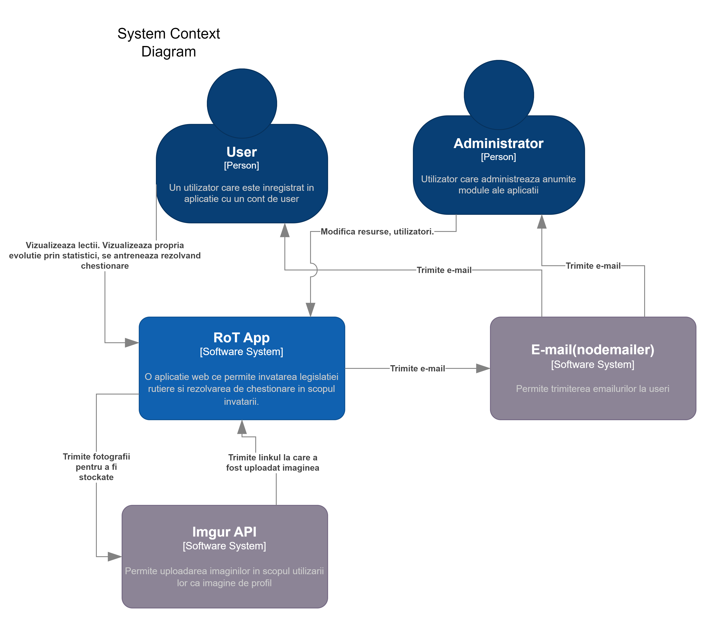
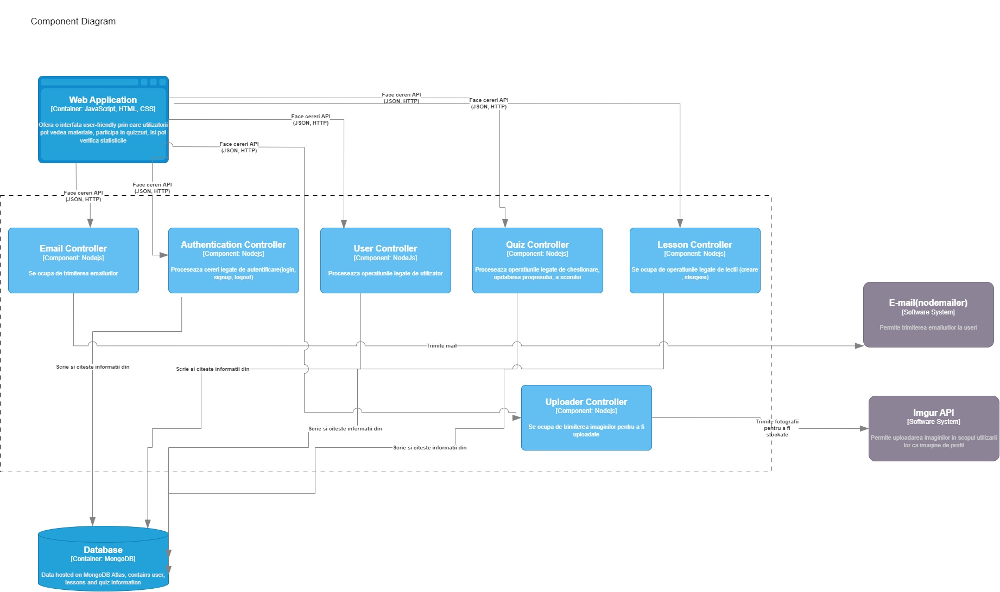

1. Prezentare
RoT este un proiect de tip quiz și tutor de învățare a regulilor de circulație rutieră. Acesta este destinat tuturor celor care doresc să obțină permisul de conducere și nu au acces la un instructor. RoT își propune să ofere un mediu de învățare interactiv și distractiv, prin intermediul căruia utilizatorul să poată învăța regulile de circulație rutieră într-un mod cât mai eficient. RoT oferă posibilitatea de a testa cunoștințele acumulate utilizând teste de tip quiz. De asemenea, RoT oferă posibilitatea de a vizualiza regulile de circulație rutieră într-un mod cât mai interactiv și distractiv.
2. Motivație
RoT este un proiect care ne-a fost propus de către profesorul de la cursul de Tehnologii Web. Acest proiect ne-a oferit ocazia de a ne îmbunătăți cunoștințele de bază în limbajul de programare JavaScript și HTML/CSS. De asemenea, alegerea temei proiectului a fost influențată de faptul că ambii membri ai echipei au avut nevoie de un tutor de învățare a regulilor de circulație rutieră înainte de a obține permisul de conducere.
3. Design
Design-ul proiectului RoT este realizat folosind elemente de design
din stilul Flat Design. Acest stil de design este caracterizat prin
utilizarea de culori pastelate, linii drepte și un design simplu.
Paleta de culori este urmatoarea:
Culoare 1
Culoare 2
Culoare 3
Culoare 4
4. Tehnologii
- HTML
- CSS
- JavaScript
- Node.js
- MongoDB
- ImgurAPI
5. Structură
Mai jos este prezentată structura paginilor proiectului RoT.
5.1. Pagina de start
Pagina de start a proiectului RoT este o pagină simplă, care conține un meniu de navigare și diferite butoane cu care putem interacționa prin intermediul acestuia. Pagina de start este accesibilă tuturor utilizatorilor care nu sunt logați si prezintă toate serviciile oferite de aplicația noastră. Aici se pot previzualiza imagini cu interfața secțiunilor aplicației noastre (cea de chestionare, de lectii de legislație și de profil utilizator). De pe pagina de start putem fie sa accesam pagina de contact, fie cea de login / signup.
5.2. Pagina de login/sign up
Pagine de login / sign-up permite utilizatorilor să se logheze sau să își creeze un nou cont în cazul în care nu au unul. De asemenea utilizatorii care au deja cont vor avea posibilitatea de a-și reseta parola.
5.3. Pagina de contact
Pagina de contact permite utilizatorilor să scrie un mesaj care va fi transmis prin mail echipei noastre.
5.4. Pagina de profil (dashboard)
Pagina de profil permite utilizatorilor să vizualizeze informații
despre contul lor, precum și să poată vizualiza progresul lor în ceea
ce privește învățarea regulilor de circulație rutieră. În partea
stângă a paginii se află mai multe statistici despre utilizator, cum
ar fi punctajul acumulat și numărul de teste pe care le-a făcut ,
precum și numărul de răspunsuri corecte și greșite. În partea dreaptă
se află un leaderboard cu cei mai buni utilizatori ai aplicației. De
asemenea, utilizatorii vor putea vizualiza și rezultatul obținut la
ultimul test pe care l-au făcut.
Punctajul pe care îl obține un utilizator la un test este calculat nu
este public pentru utilizator, dar este influențat de cât de multe
răspunsuri a dat utilizatorul corect și de timpul necesar pentru a
completa testul.
5.5. Pagina de quizz-uri
Pagina de quiz-uri permite utilizatorilor să își testeze cunoștințele acumulate în urma parcurgerii lecțiilor. Ei își vor alege unul din cele 9 chestionare prestabilite, sau își vor genera un chestionar cu întrebari aleatorii. Odată ce încep un chestionar vor avea 30 de minute la dispoziție pentru a răspunde la cele 26 de întrebări. Dacă răspund la 22 de întrebări aceștia vor promova testul. Răspunsurile corecte/greșite vor fi contorizate in permanență.
5.6. Pagina de legislație rutieră/indicatoare rutiere
Pagina de legislație rutieră/indicatoare rutiere permite utilizatorilor să învețe atât indicatoarele rutiere cât și legislația rutieră. Ei vor putea citi informații relevante pentru fiecare dintre aceste indicatoare/legi.
6. API
RoT folosește un API intern pentru a putea stoca datele
utilizatorilor, informații despre teste și lecții. API-ul este
realizat folosind Node.js și MongoDB.
API-ul este folosit pentru a putea stoca datele utilizatorilor, precum
și pentru a putea realiza interacțiunea între front-end și back-end.
6.1 Sistem de login
API-ul nostru ofera posibilitatea de a crea un cont nou, de a te loga, de a te deloga, de a reseta parola, de a schimba parola.
Logarea se face prin intermediul unui token JWT, care este generat la momentul logării și este trimis către client. Acest token este folosit pentru a verifica dacă utilizatorul este logat sau nu. Dacă token-ul este valid, atunci utilizatorul este logat, altfel nu. Token-ul este trimis de către client la fiecare request către server, printr-un cookie HTTP ONLY.
Un utilizator poate să își creeze un cont nou, folosind o adresă de email. In momentul creeari contului, parola este criptată folosind bcrypt, iar apoi este stocată în baza de date.
Un utilizator poate să își schimbe parola, folosind adresa de email setata la crearea contului, in cazul in care a uitat-o. Odata introdus emailul, sistemul intern de mailing, trimite un email cu un cod de resetare a parolei. Acest cod este generat aleatoriu, si este stocat in baza de date, avand o valabilitate de 5 minute. Daca codul este valid, utilizatorul poate sa isi schimbe parola. In momentul schimbarii parolei, parola este criptată folosind bcrypt, iar apoi este stocată în baza de date.
6.2 Sistem de Quizz
API-ul nostru ofera posibilitatea de genera quizuri random, de a le sterge si de a le comlpeta.
Fiecare quizz va fi salvat in baza de date, si va fi asociat utilizatorului care l-a generat. Cand acesta incepe un chestionar, un timer de 30 de minute este pornit. Timpul de start al chestionarului este salvat in baza de date, si este folosit pentru a calcula timpul ramas la fiecare cerere de verificare a raspunsului. Daca utilizatorul nu a reusit sa termine chestionarul in 30 de minute, acesta este automat incheiat, iar rezultatul este salvat in baza de date. Deoarece startTime-ul este generat de server si stocat in baza de date, userul nu poate manipula in mod fraudulent timpul ramas.
In timpul chestionarului, utilizatorul poate sari peste o intrebare pentru a reveni la ea mai tarziu, sau poate trimite raspunsurile dupa ce le selecteaza. De asemenea, state-ul chestionarului este updatat in permanenta in localStorage, astfel incat daca utilizatorul da refresh la pagina, quizzul va continua.Dupa fiecare intrebare la care raspunde utilizatorul, se vor actualiza si scorurile acestuia in baza de date.
La finalul chestionarului, utilizatorului i se arata timpul pe care il mai avea pentru a completa chestionarul, punctajul si daca a promovat sau nu. Daca a avut intrebari gresite, are optiunea de a vedea raspunsurile corecte prin efectuarea unei cereri catre server care returneaza chestionarul cu raspunsurile corecte.
6.3 Sistem de Invatare
API-ul nostru ofera clientului o gama variata de lectii ce pot fi studiate in vederea intelegerii parofundate a indicatoarelor si legislației.
Lectiile sunt de doua categorii, (Indicatoare si Legislație), care la au la randul lor o varietate de subcategorii.
Un utilizator cu privilegii de admin, poate adauga noi lectii sau poate sterge lectiile actuale.
6.4 Pagina de Profil
API-ul nostru pune la dispozitie utilizatorului, informatii despre contul pe care il detine, statistici si quizz-uri ce au fost completate sau create.
In pagina de profil, utilizatorul poate vedea informatii despre contul sau, cum ar fi punctajul total, numarul de teste completate, numarul de raspunsuri corecte si numarul de raspunsuri gresite.
Mai mult decat atat, utilizatorul poate sa vada top-uri diverse si chiar sa se aboneze la RSS pentru a vedea utlimele modificari!
6.5 Sistem de contact
In cazul in care se depisteaza o problema sau unul dintre utilizatori doreste sa comunice ceva unui admin, API-ul nostru implementeaza un sistem de contact.
In pagina de contact poate fi completat un formular ce v-a crea un corp de email si v-a trimite continutul API-ului care il va trimite prin email echipei RoT
7. Arhitectura
7.1 Context
Acest nivel descrie imaginea de ansamblu a sistemului, inclusiv limitele sistemului, principalii utilizatori și interacțiunile cu sistemele externe.

7.2 Container
Acest nivel detaliază ce tehnologii de nivel înalt sau depozite de date sunt utilizate în sistem.
7.3 Componente
Acest nivel oferă o perspectivă asupra principalelor componente ale sistemului și a modului în care acestea interacționează.
8. Concluzie
RoT poate fi cu siguranță un proiect de succes. Acesta va fi folosit de către o mulțime de persoane, deoarece este un proiect utilitar, care îi va ajuta pe utilizatori să învețe regulile de circulație rutieră. De asemenea, RoT va putea fi folosit de către instituții de învățământ(Școli Auto), care vor putea folosi aplicația pentru a testa cunoștințele elevilor lor.